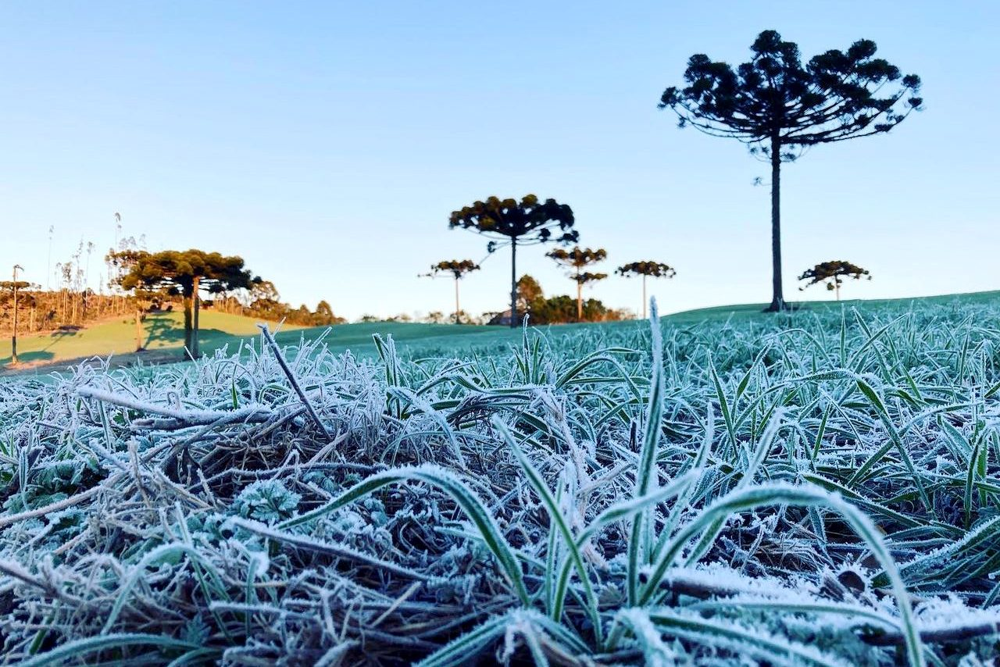
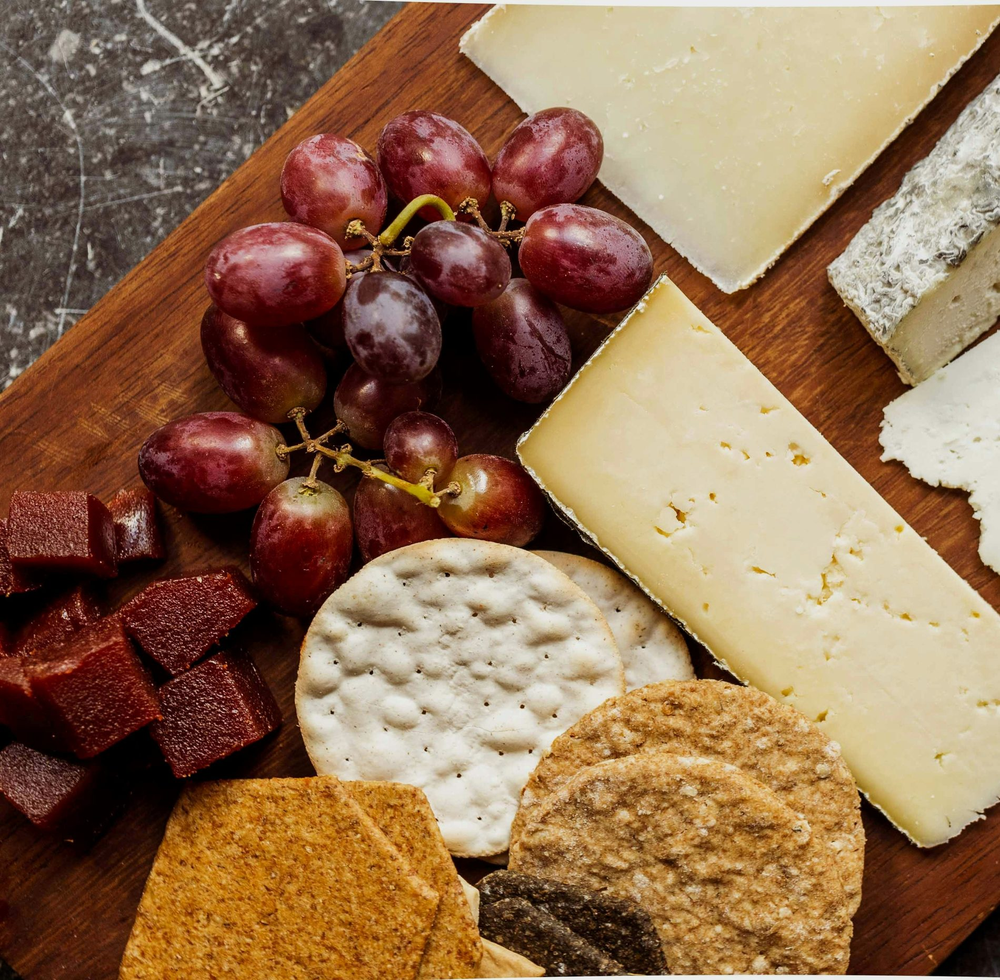
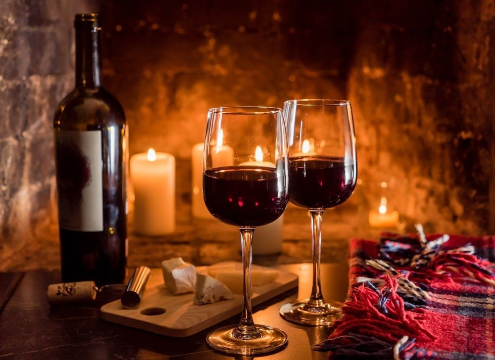
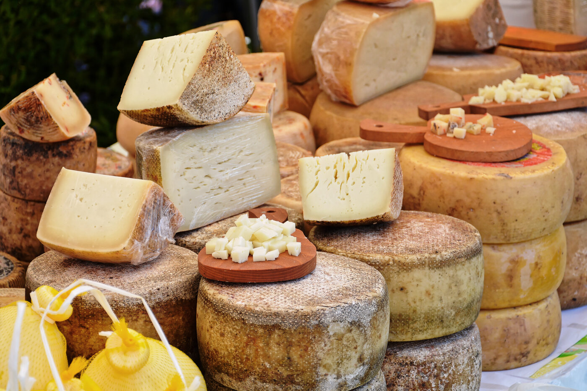
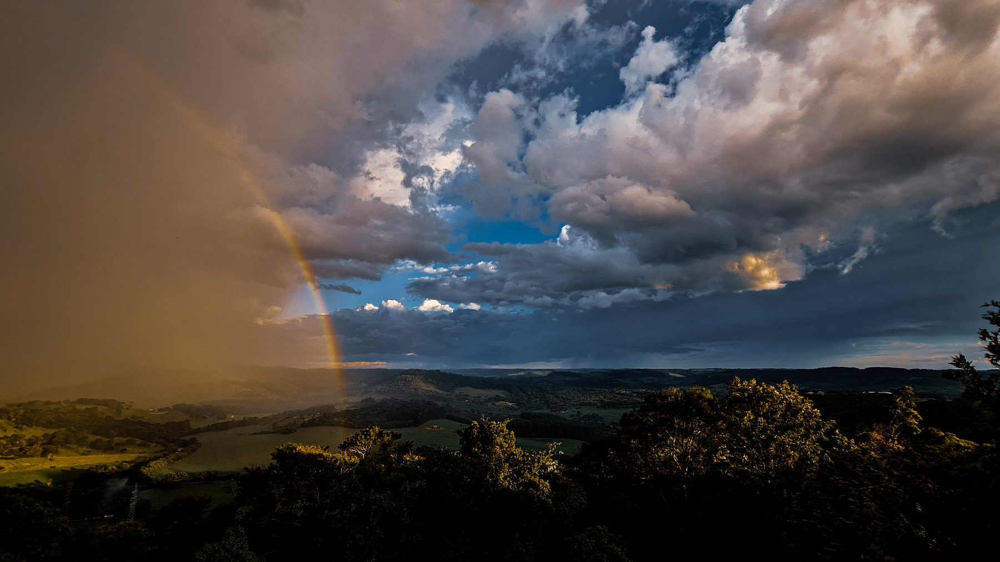
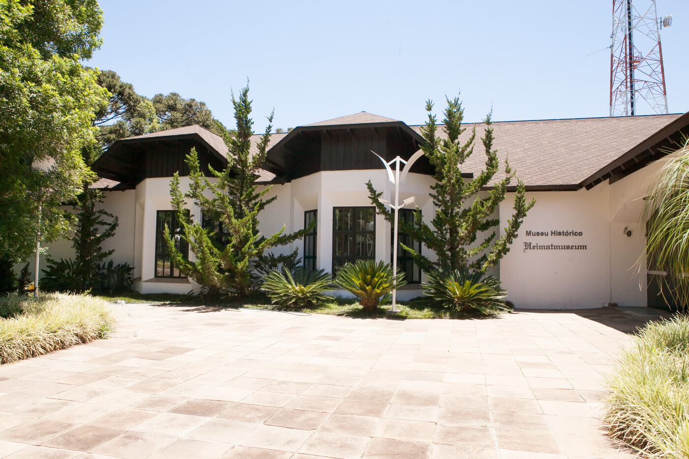
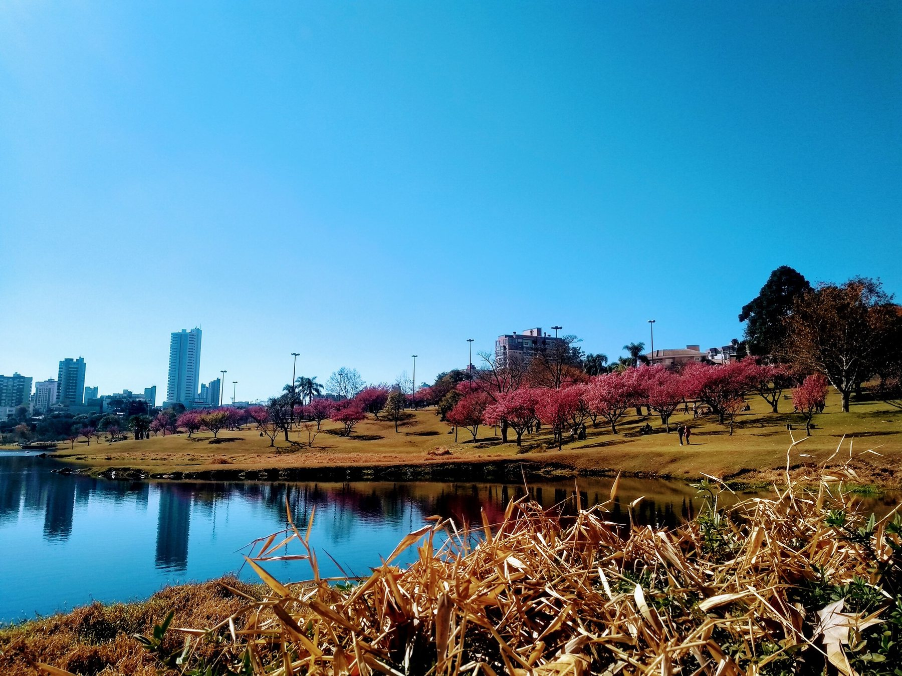
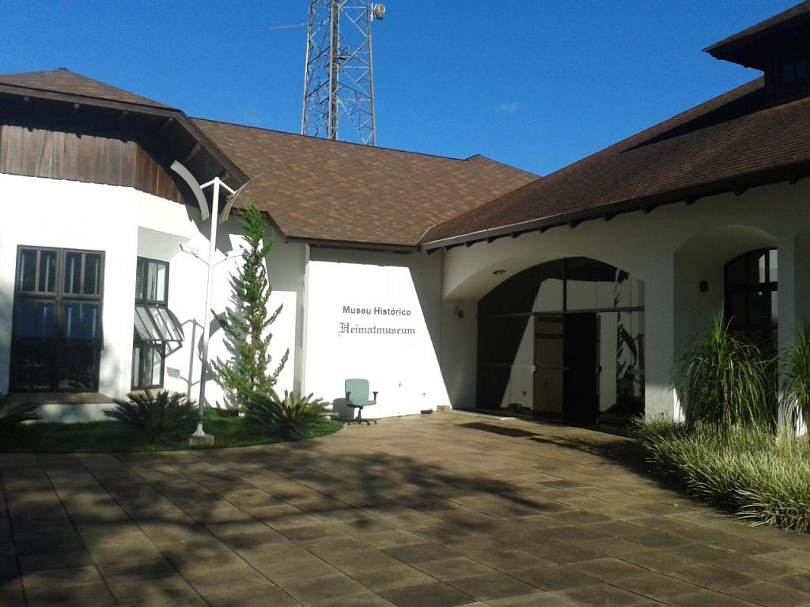

Natureza & Araucárias
Araucárias, cachoeiras, parques e paisagens de geada que inspiram e reconectam.

1 jul — 21 set · 2026 · 82 diasO inverno mais especial da história de Guarapuava: 82 dias e mais de 100 eventos de gastronomia, cultura e natureza, na Capital Nacional da Cevada e do Malte.
Entre araucárias, geadas e paisagens surpreendentes, Guarapuava convida você a descobrir um destino onde inverno, gastronomia, cultura e natureza se encontram de forma única.
Das manhãs cobertas pela geada aos encontros ao redor da boa mesa, a cidade transforma o frio em momentos memoráveis. Mais do que um destino: uma experiência para sentir, saborear e viver sem pressa.

Natureza, cultura e hospitalidade que viram experiência — no ritmo da estação mais charmosa do ano.
Araucárias, cachoeiras, parques e paisagens de geada que inspiram e reconectam.
Clima frio, cafés acolhedores e a hospitalidade que torna cada visita inesquecível.
Carnes nobres, pinhão, massas e chocolates — a cozinha afetiva da estação.
Rótulos produzidos no alto do planalto — o par perfeito para as noites frias.
+100 estilos na Capital da Cevada e do Malte. 1 em cada 3 cervejas do Brasil nasce aqui.
Tradição germânica, história tropeira e o espetáculo das cerejeiras em flor.
Uma programação gigante, integrada pela cidade inteira. Os próximos grandes momentos da temporada — e há muito mais na programação completa.
O pontapé dos 82 dias de festival, com vinícolas, cervejarias artesanais, food trucks e artistas locais.
A gastronomia típica da estação no centro da festa: pratos quentes, pinhão e os sabores que aquecem o inverno.
As cervejarias artesanais locais reunidas para celebrar a Capital Nacional da Cevada e do Malte. Estilos premiados e muita música.
Exposição de +100 tratores antigos, música ao vivo e praça de alimentação para toda a família, em Entre Rios.
Um dos grandes shows da temporada, no Centro de Eventos Cidade dos Lagos.
Os maiores hits do rock dos anos 80, 90 e 2000 num espetáculo que já rodou o mundo. No Teatro Municipal.
Gastronomia, cultura e turismo no Centro de Eventos Cidade dos Lagos.
Música clássica e ópera italiana iluminadas por mais de 100 velas, no Teatro Municipal.
Roteiros temáticos para viver o melhor de Guarapuava no inverno. Toque e mergulhe em cada experiência.

Carnes nobres, pinhão e a cozinha de inverno que é referência no estado.
Explorar
+100 estilos artesanais e 9 cervejarias na Capital da Cevada e do Malte.
Explorar
Vinhos da região, degustações e o brinde perfeito para o frio.
Explorar
Queijos autorais reconhecidos no Brasil e no mundo, feitos no frio do planalto.
Explorar
Araucárias, cachoeiras, o Salto São Francisco e o campo no seu tempo.
Explorar
Tradição tropeira, imigrações e um pedaço da Europa no planalto.
ExplorarOnde nascem grandes sabores. Cervejarias premiadas, harmonizações, pubs e experiências sensoriais fazem parte da essência de um destino pensado para quem aprecia boa gastronomia.
Capital da Cevada e do Malte
Cachoeiras, rios, campos, araucárias, parques e trilhas convidam à contemplação e à aventura.

O espetáculo das floresAo longo do festival, as cerejeiras florescem e transformam parques e avenidas num cenário de tirar o fôlego. É a natureza fazendo a sua própria festa.
Um convite irresistível para a foto, o passeio e o respiro — o anúncio rosado de que a virada da estação está chegando.

Entre Rios · colonização suábiaMarcada pelos povos originários, pela tradição tropeira e pelas imigrações, Guarapuava reúne italianos, alemães, poloneses, ucranianos e muitos outros povos numa identidade rica em história e sabores.
Colonizado pelos Suábios do Danúbio, o distrito de Entre Rios preserva arquitetura típica, gastronomia alemã, cafés coloniais, cervejarias e museus. No inverno, ganha ainda mais encanto.
Acompanhe a programação completa e as novidades do Inverno Guarapuava 2026 pelas redes oficiais. A cidade está de braços e coração abertos para receber você.